Purpose
This document will outline two ways to initialize your Spring Boot projects:
- Spring Initializr
- Manual creation of build files
Developers may want to use the Spring Initializr to bootstrap their Spring applications projects if they are not familiar with the starter BOMS, or their organizations may compel them to use a custom Initializr for security or legal compliance reasons.
Developers familiar with the Spring Boot starters BOMs and/or their dependencies may wish to manually create their build files and manually configure.
Spring Initializr
Business Case
While Spring Boot gives a robust framework to simplify dependency management and configuration of Spring applications, the core framework does not give a way to bootstrap the application development projects.
Maven provides a feature called "archetype" that has similar purpose, to allow building instance of applications from templates. It falls short, as it does not handle all the concerns of modern Enterprise development.
The Spring Initializr is a framework for curating the creation of Spring Boot application projects:
-
Curate available Spring Boot Versions for use in an organization's Spring projects.
-
Curate the available starters (BOMs) for a Spring Boot application. These may include what Spring Boot supplies out-of-box, or perhaps custom starters.
-
Restrict and/or identify source repositories for BOMS (for Enterprise companies this will be an internal Maven repository, not Maven Central).
-
Select available starter dependencies by an intuitive component name or tag.
You may also build you own Spring Initialzr site and APIs, see the Spring Initializr Documentation for more information.
Spring Starter Web Site
If you prefer to generate a Spring Boot project without aid of an IDE, you may leverage the Spring Initializr website.
Here you will see the procedure to use it; the procedure is the same across all ways of using the Spring Initializr:
Procedure - Short Version
If you know the exact tag of the starter you wish to add to your project you need use only this procedure.
-
Post the Spring Initializr (here we are using the Spring Starter Site). You will see the following:
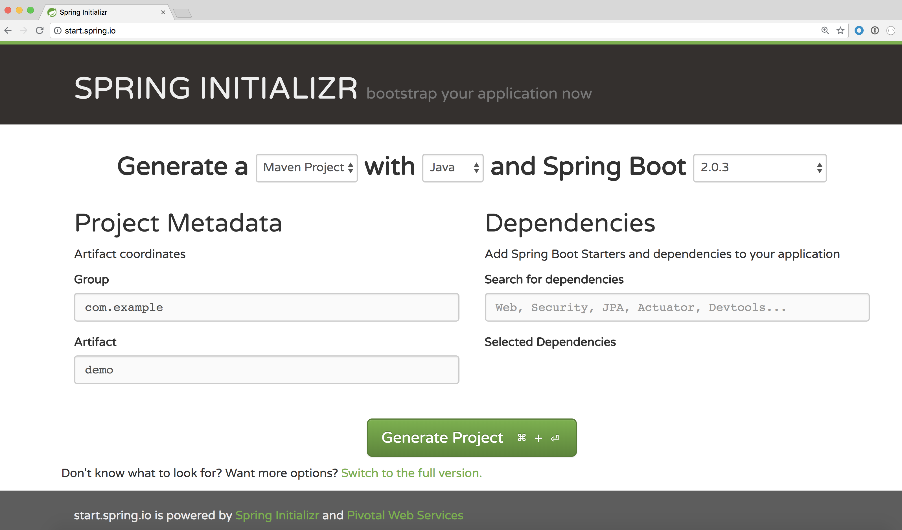
-
Choose the project type. Either Maven or Gradle are supported.
-
Choose the language type. The following are supported:
- Java
- Kotlin
- Groovy
-
Pick Spring Boot version. Note that the spring initializr shows only the last stable release, and last two SNAPSHOT releases, of the two major Spring releases, 1.5.x and 2.x.
-
Enter the group and artifact names of your new project.
-
Enter the dependency tag(s) of what starter(s) you wish to build an application for in the Dependencies >> Search for dependencies box.
For example: Web is the tag for the
spring-boot-starter-webBOM.You will see the following when attempting to filter by Web tag:
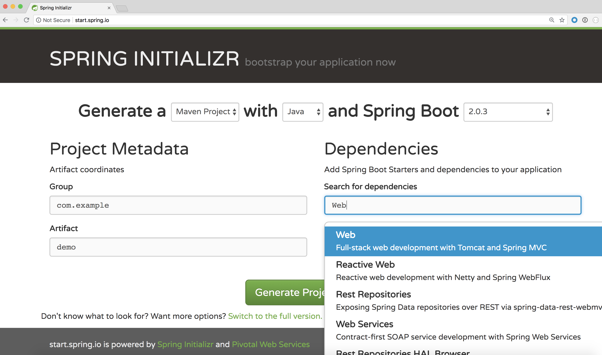
This will select the starter and dependencies for a web application.
You will see the following selected tag:
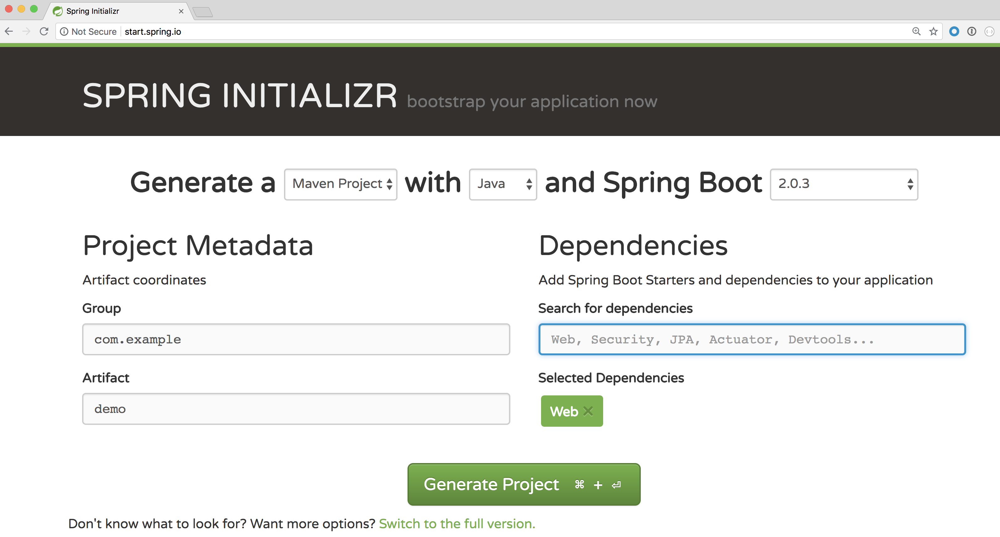
-
Click Generate button.
-
A zip file will be generated and downloaded to your machine with the following contents:
-
Build file according to the appropriate build tool (i.e.
pom.xmlorbuild.gradle).The build file contains the
spring-boot-starter-parent, the starter dependencies for the category you selected, as well as thespring-boot-starter-testtest starter dependency. -
A
srcdirectory containing a Spring Boot application file, a Spring Boot test shell file, and an emptyapplication.propertiesfile.
-
-
This structure may be imported into either IDEA IntelliJ or Eclipse/ STS IDEs.
Procedure - Long Version
If you do not know the specific tags of the starter dependencies, use this procedure as add-on to the short version.
You will use the full version of the Spring Initializr.
-
At the bottom of the Spring Starter Site click on the Switch to full version link.
-
Scroll below the Generate button, you will see large number of options of component from which to choose.
-
Select whatever options you want (in this example Web).
You will see the following:
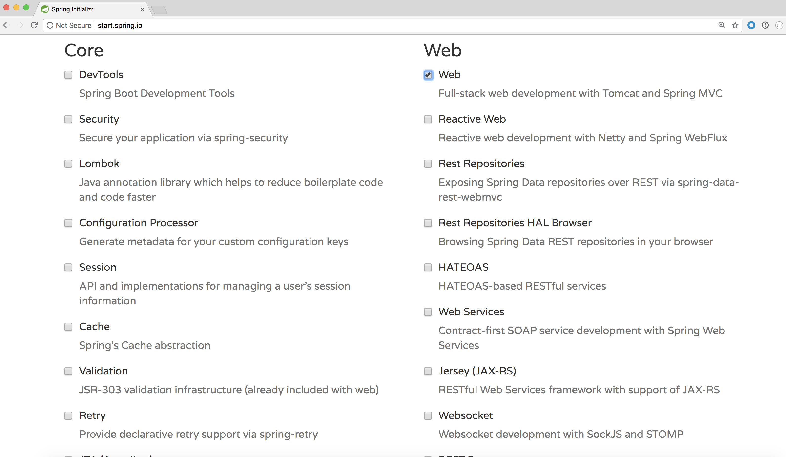
-
Click Generate button.
Spring Initializr IDE Support
Eclipse/STS
-
Select File >> New >> Spring Starter Project.
-
The following dialog will be shown:
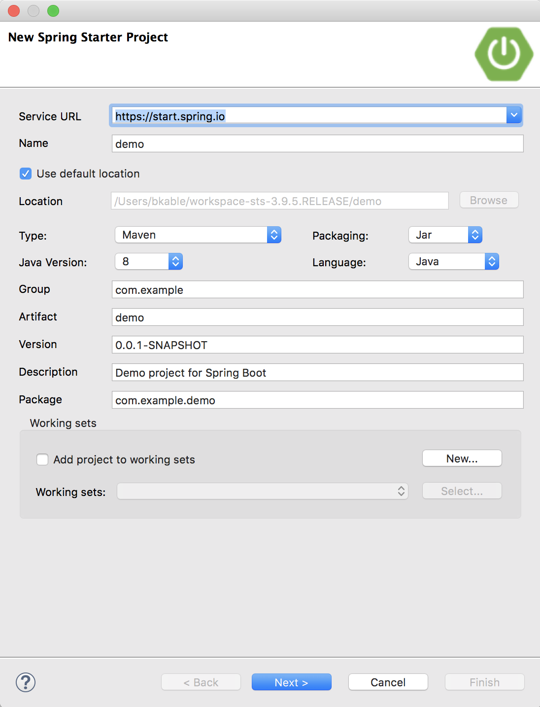
-
Follow the steps in the short version with the following modifications:
-
You may optionally change the location from the default
-
You may add to a new or existing workingset
-
-
If you are using a custom Spring Initializr override the default with the accompanying web site address in the Service URL box.
-
Click on the Next button. You will see the following dialog:
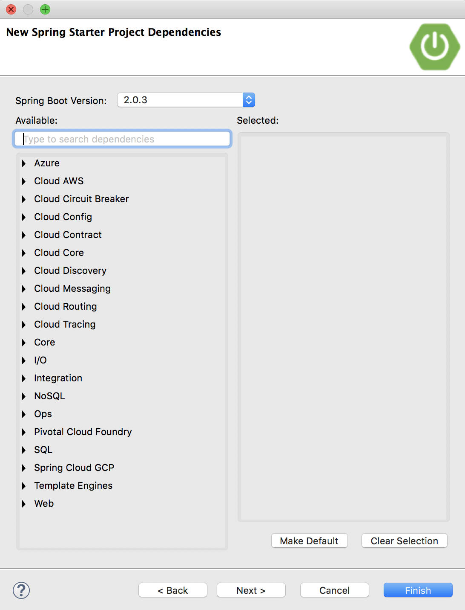
-
Select the Spring Boot version.
-
If you know the starter tag, you may do the equivalent short version by entering the tag(s) in the Available search box to give you the available components to select for your application.
-
This will filter for the available components. For example:
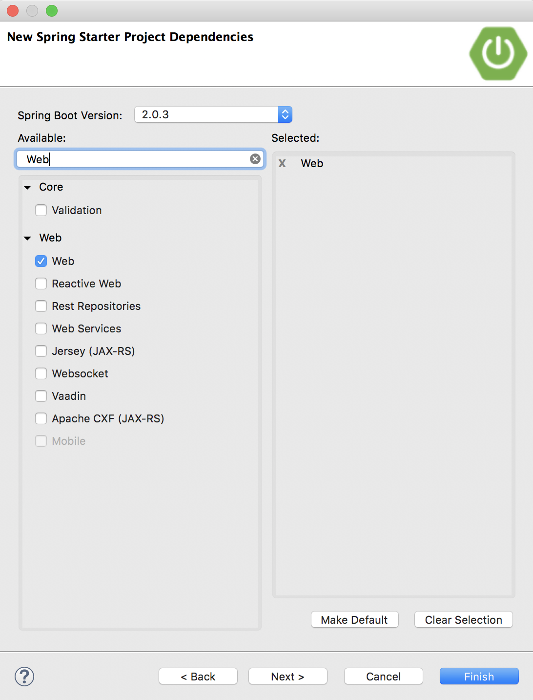
-
Select the desired components, and click Next button.
-
If you had selected a custom Spring Initializr site, change the base endpoint and/or URL specification according to your customizations. Otherwise leave default. You may select it here:
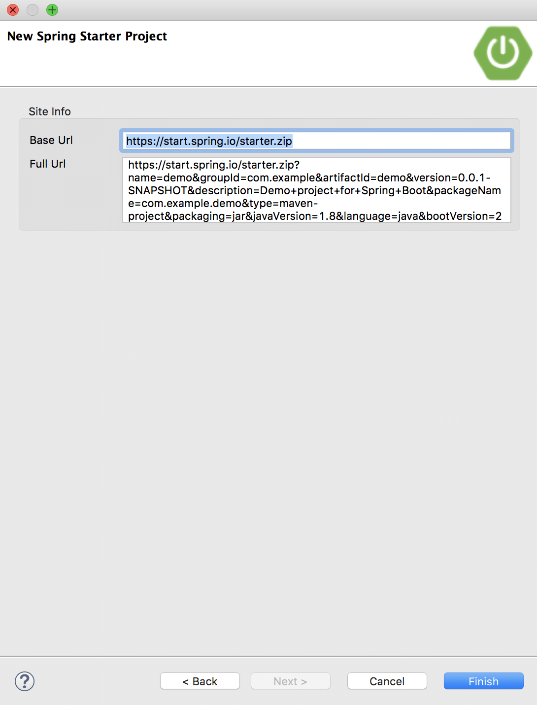
-
Click Finish button to generate the project.
IDEA IntelliJ
-
From entry screen, select Create New Project option.
-
Select Spring Initializr option in project type list.
You will see this dialog:
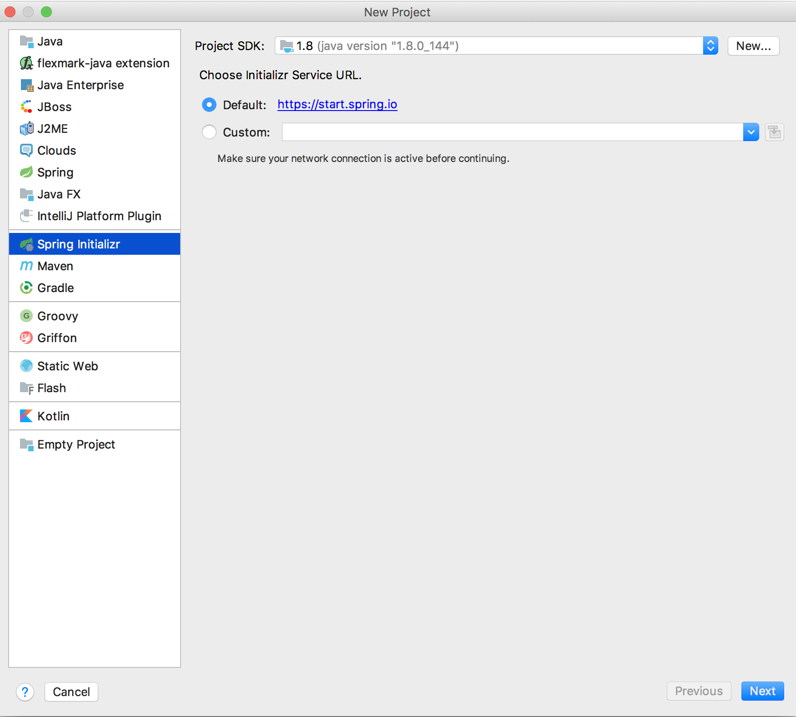
-
Select the appropriate project SDK if you have mulitiple configured. For this course you must be running JDK 8.
-
If you are using a custom Spring Initializr click the Custom radio button, and supply the accompanying web site address.
-
Click Next button.
You will see the following dialog:
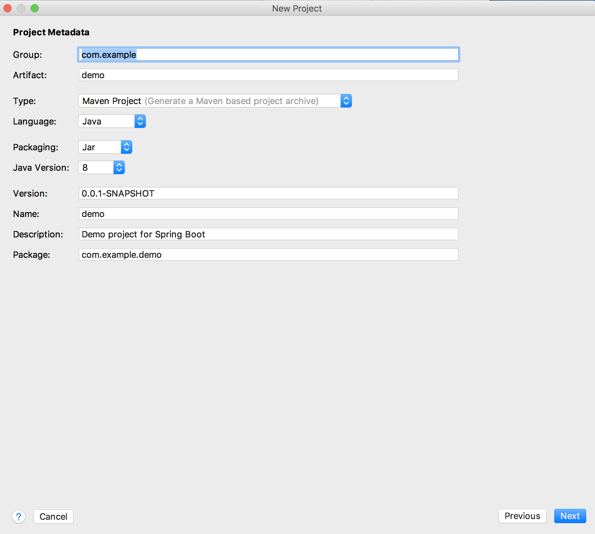
-
Enter project metadata, select project type of either Maven or Gradle, packaging, Java version.
-
Click Next button. You will see the following dialog:
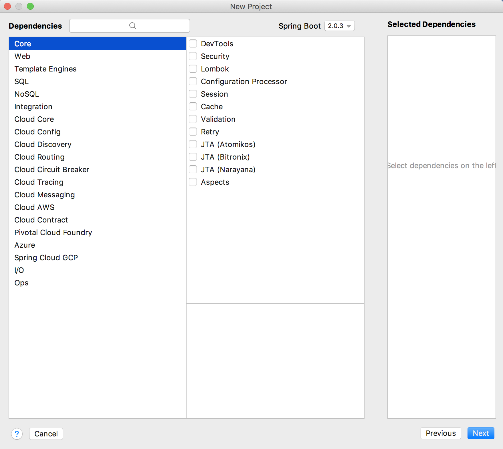
-
You can provide the short version search tag in the Dependencies search box, or you can select from the two level hierarchy boxes for the components you desire.
-
For example:
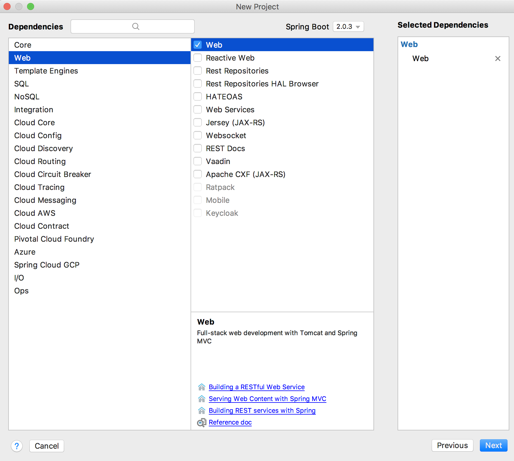
-
Select the desired components, and click Next button. You will be presented with the following dialog:
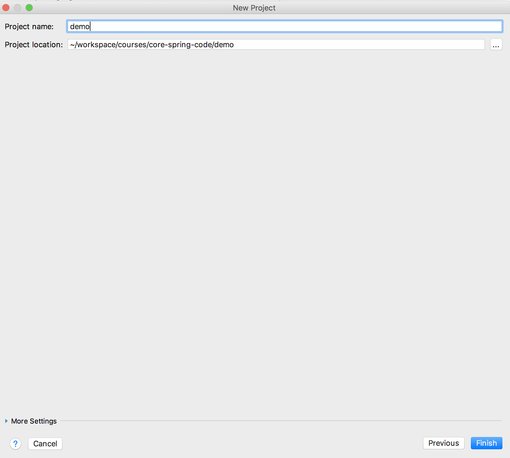
-
Provide a project name and location.
-
Click Finish button to generate the project.
Manual Configuration of Project Files
Configuring a Spring boot build file requires a few conceptuals steps:
-
Generate a standard Java build file with a Maven Repository that hosts or proxies all the project dependencies.
-
Adding a reference to a "parent" BOM or Spring Boot version.
-
Adding a Spring Boot plugin, which handles packaging and dependency management of your application.
-
Adding the Spring Boot starter dependencies, or (if you are feeling powerful, curate your dependencies by hand).
Maven
The Spring Boot application Maven POM requires (in addition to the standard Java application requirements):
-
A parent of
spring-boot-starter-parent- This results in subsequent dependencies rooting from the parent specified Spring version. -
Spring Boot Maven Plugin
spring-boot-maven-plugin- It derives its version from the parent. -
Starter dependencies (or hand-crafted dependencies)
An example pom.xml might look like this:
<?xml version="1.0" encoding="UTF-8"?>
<project xmlns="http://maven.apache.org/POM/4.0.0" xmlns:xsi="http://www.w3.org/2001/XMLSchema-instance"
xsi:schemaLocation="http://maven.apache.org/POM/4.0.0 http://maven.apache.org/xsd/maven-4.0.0.xsd">
<modelVersion>4.0.0</modelVersion>
<groupId>com.example</groupId>
<artifactId>demo</artifactId>
<version>0.0.1-SNAPSHOT</version>
<packaging>jar</packaging>
<name>demo</name>
<description>Demo project for Spring Boot</description>
<parent>
<groupId>org.springframework.boot</groupId>
<artifactId>spring-boot-starter-parent</artifactId>
<version>2.0.3.RELEASE</version>
<relativePath/> <!-- lookup parent from repository -->
</parent>
<properties>
<project.build.sourceEncoding>UTF-8</project.build.sourceEncoding>
<project.reporting.outputEncoding>UTF-8</project.reporting.outputEncoding>
<java.version>1.8</java.version>
</properties>
<dependencies>
<dependency>
<groupId>org.springframework.boot</groupId>
<artifactId>spring-boot-starter-web</artifactId>
</dependency>
<dependency>
<groupId>org.springframework.boot</groupId>
<artifactId>spring-boot-starter-test</artifactId>
<scope>test</scope>
</dependency>
</dependencies>
<build>
<plugins>
<plugin>
<groupId>org.springframework.boot</groupId>
<artifactId>spring-boot-maven-plugin</artifactId>
</plugin>
</plugins>
</build>
</project>
Gradle
The Spring Boot application Gradle build file requires (in addition to the standard Java application requirements):
-
Spring Boot Gradle Plugin
spring-boot-gradle-plugin. -
You must
applythe 'org.springframework.boot' and 'io.spring.dependency-management' plugins. -
Starter dependencies (or hand-crafted dependencies) - The starter dependencies derive their versions from the 'io.spring.dependency-management' plugin.
An example build.gradle file might look like this:
buildscript {
ext {
springBootVersion = '2.0.3.RELEASE'
}
repositories {
mavenCentral()
}
dependencies {
classpath("org.springframework.boot:spring-boot-gradle-plugin:${springBootVersion}")
}
}
apply plugin: 'java'
apply plugin: 'eclipse'
apply plugin: 'org.springframework.boot'
apply plugin: 'io.spring.dependency-management'
group = 'com.example'
version = '0.0.1-SNAPSHOT'
sourceCompatibility = 1.8
repositories {
mavenCentral()
}
dependencies {
compile('org.springframework.boot:spring-boot-starter-web')
testCompile('org.springframework.boot:spring-boot-starter-test')
}
with its settings.gradle containing the rootProject.ame like this:
rootProject.name = 'demo'
BOMs, their dependencies, and dependency management
While this article should get you up and running with Spring Boot starters, it is worth warning that it is imperative to understand both the direct and transitive dependencies of the Spring Boot and Spring Boot derived projects (for example, Spring Cloud).
When dealing with refactoring or decomposition of complex component-based projects, it may be necessary in some cases to forgo use of the starters and curate dependencies by hand.
it is worth getting familiar with use of dependency management tools associated with your build system.
For Maven, the dependency
plugin,
and in particular the dependency:tree goal will be your friend.
For Gradle, check out the following tasks:
dependencies, see Managing DependenciesdependencyManagement, part of Spring Dependency Management plugin